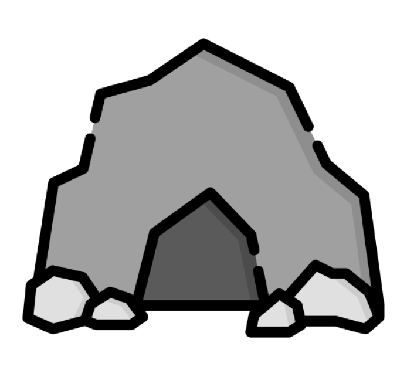
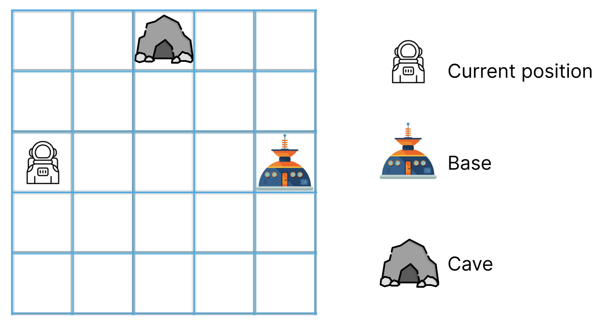
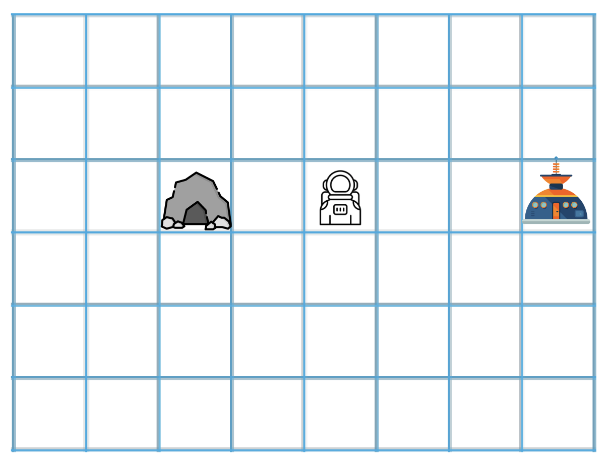
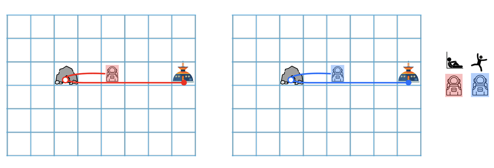
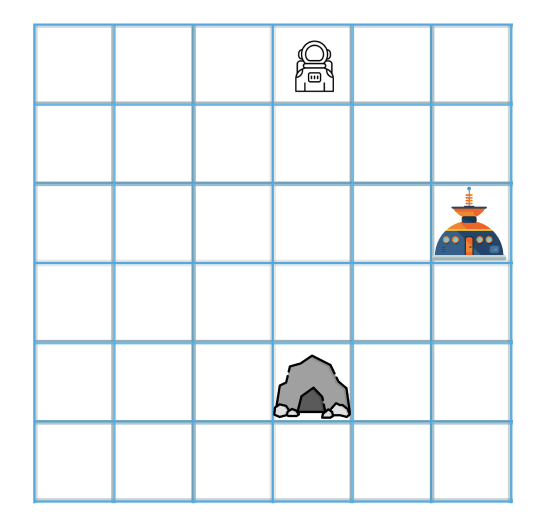
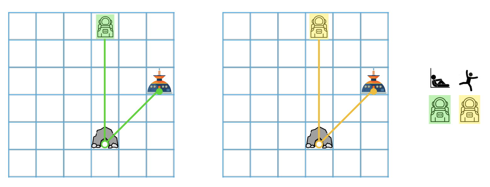

<!DOCTYPE html>
<html>
  <head>
    <title>My experiment</title>
    <script src="https://unpkg.com/jspsych@8.2.1"></script>
    <link href="jspsych/jspsych.css" rel="stylesheet" type="text/css" />
    <script src="https://unpkg.com/@jspsych/plugin-html-keyboard-response@2.0.0"></script>
    <script src="https://unpkg.com/@jspsych/plugin-html-slider-response@2.0.0"></script>
    <script src="https://unpkg.com/@jspsych/plugin-preload@2.0.0"></script>
    <script src="https://unpkg.com/@jspsych/plugin-html-button-response@2.0.0"></script>
    <script src="https://unpkg.com/@jspsych/plugin-video-button-response@2.0.0"></script>
    <script src="https://unpkg.com/@jspsych/plugin-instructions@2.0.1"></script>
    <script src="https://unpkg.com/@jspsych/plugin-survey-html-form@2.0.1"></script>
    <script src="https://unpkg.com/@jspsych-contrib/plugin-pipe"></script>
    <script src="https://unpkg.com/@jspsych/plugin-survey-multi-choice@2.2.1"></script>

    <link href="https://unpkg.com/jspsych@8.2.1/css/jspsych.css" rel="stylesheet" type="text/css" />
    <link rel="stylesheet" href="slider.css">
  </head>
  <style>
    p {
      word-wrap:break-word;
      width:80%;
      text-align:center;
      margin: auto;
      }
    
      .instructions-text {
    max-width: 60vw;
    text-align: left;
    margin: auto;
    line-height: 1.6;
    font-size: 24px;
    }
  </style>
  <body>
  </body>
  <script>
    var jsPsych = initJsPsych({
    override_safe_mode: true,
    show_progress_bar: true,
    on_finish: function() {
             //window.location = "https://connect.cloudresearch.com/participant/project/2108E59B57/complete";
            //  jsPsych.data.displayData();
            },
});


const subject_id = jsPsych.randomization.randomID(10);
//const filename = `${subject_id}.csv`;

/*experiment variables*/
const pilot_mode = false

/*capture info from mturk/connect, except in test mode*/
if(pilot_mode) { 
    var study_id = 'test';
    var session_id = 'test';
    participant_id = 'test_' + String(jsPsych.randomization.randomID(10)) //overwrite the participant id
} else {
    participant_id = jsPsych.data.getURLVariable('participantId'); 
    var assignment_id = jsPsych.data.getURLVariable('assignmentId');
    var project_id = jsPsych.data.getURLVariable('projectId');
}

jsPsych.data.addProperties({
  participant_id: "participant_id",
  assignment_id: "assignment_id",
  project_id: "project_id"
})

const filename = `${participant_id}.csv`;


var preload = {
      type: jsPsychPreload,
      auto_preload:true
    };

var duration = '15 minutes';
    var amount = '$3.75';
    var consent = {
        type: jsPsychHtmlButtonResponse,
        stimulus: '<p><b>Consent Form</b></p> <div style="text-align:left; background-color:lightblue; padding:2vw; max-width:80vw;">' +
            '<p style="text-align:left;"><b>Purpose:</b> The purpose of this study is to understand ' +
            'how people think about actions of others.</p>' +
            '<p style="text-align:left;"><b>Procedures:</b> In this study, you will read sentences, ' +
            'see pictures, and use sliders to answer simple questions ' +
            'about them. This study should take approximately ' + duration + '.</p>' +
            '</p><p style="text-align:left;"><b>Participation:</b> Participation in this study is ' +
            'voluntary. If you decide to join now, you can change your mind ' +
            'later. ' +
            '</p><p style="text-align:left;"><b>Payment:</b> You will be paid $15.00/hour ' +
            'for participating in this study. Given the estimated duration of ' +
            duration + ', your payment will amount to ' + amount + '.</p>' +
            '<p style="text-align:left;"><b>Risks and benefits:</b> There are no risks associated ' +
            'with participating in this study. There are no direct benefits ' +
            'associated with participating in this study. </p><p style="text-align:left;"><b>Use of ' +
            'data by study researchers:</b> The research team led by Shari ' +
            'Liu at JHU will have access to your answers. ' +
            '</p><p style="text-align:left;"><b>Publication of results:</b> The results of the research ' +
            'may be presented at scientific meetings or published in scientific ' +
            'journals. Your individual responses may be published. We will ' +
            'never publish your name, the date that you participated, and any other ' +
            'information that could be used to identify you. </p><p style="text-align:left;"><b>' +
            'Researcher contact information:</b> This study is run by Dr. ' +
            'Shari Liu at JHU. If you have any questions or concerns about ' +
            'this study, or in the very unlikely event of a research-related ' +
            'injury, please contact sliu199@jhu.edu. ' +
            '</p><p style="text-align:left;"><b>Research rights information:</b> If you have questions about ' +
            'your rights as a research participant or feel that you have not ' +
            'been treated fairly, please call the Homewood Institutional Review ' +
            'Board at Johns Hopkins University at (410) 516-6580. If you have ' +
            'any questions or issues completing the survey, please email Shari ' +
            'Liu at sliu199@jhu.edu. </p> </div>' +
            '<p> Do you consent to participate? </p>',
        choices: ['Yes', 'No'],
        data: {trial_id: 'consent'},
        on_finish: function(data) {
        if (data.response === 1) {  // If 'No' is chosen 
        jsPsych.abortExperiment('You did not consent to participate. The study will now end. Thank you for your time.');  
        }
        }
    };


var intro = {
  type: jsPsychInstructions,
  pages: [
    '<div class="instructions-text"> Welcome to the study! Please read the instructions carefully.</div>',
    '<div class="instructions-text"> The astronauts are exploring a foreign planet with minerals that can be found inside caves.<br><br></div>' + '<div></div>',
    '<div class="instructions-text"> All astronauts have access to a map of the planet. The map shows the locations of the <b>home base</b> and the <b>caves</b>, but not whether the caves have minerals. The only way to know if a cave actually contains minerals is to go inside and check.</div>' + '<br>' + '<div> Here is an example of a map:</div>' + '<br>' + '<div></div>',
    '<div class="instructions-text"> If an astronaut does find minerals in a cave, excavating a mineral sample is super fast and effortless due to specialized tools. The samples are very light and easy to transport.</div>',
    '<div class="instructions-text"> All astronauts are equally skilled at navigating the planet and extracting the minerals. </div>',
    '<div class="instructions-text"> Next, we have some <b>true/false questions</b> to test your understanding. Please only proceed when you have carefully read the instructions (feel free to go back and reread them if you want).</div>'
    ],
    allow_backward: true,
    show_clickable_nav:true,
    button_label_previous: '<',
    button_label_next: '>',
}

var compcheck1 = {
  type: jsPsychHtmlButtonResponse,
  stimulus: '<div class="instructions-text">The astronauts can find minerals inside every cave.</div>',
  choices: ['true', 'false'],
  on_finish: function(data){
    data.correct = (data.response === 1);  // true if 'false'
  }
  }

var compcheck1_feedback = {
  type: jsPsychHtmlButtonResponse,
  stimulus: function(){
      var last_trial_correct  = jsPsych.data.get().last(1).values()[0].correct;
    if(last_trial_correct){
      return `<p style="color: green;">Correct</p>
      <div class="instructions-text">Not all caves contain minerals. The only way to know if a cave actually contains minerals is to go inside and check.</div>`
    } else {
      return `<p style="color: red;">Wrong</p>
      <div class="instructions-text">Not all caves contain minerals. The only way to know if a cave actually contains minerals is to go inside and check.</div>` 
    }
},
  choices: ['Next']
}

var compcheck2 = {
  type: jsPsychHtmlButtonResponse,
  stimulus: '<div class="instructions-text">All astronauts are equally capable of working on the planet.</div>',
  choices: ['true', 'false'],
  on_finish: function(data){
    data.correct = (data.response === 0);  // true if 'true'
  }
  }

var compcheck2_feedback = {
  type: jsPsychHtmlButtonResponse,
  stimulus: function(){
      var last_trial_correct  = jsPsych.data.get().last(1).values()[0].correct;
    if(last_trial_correct){
      return `<p style="color: green;">Correct</p>
      <div class="instructions-text">All astronauts are equally skilled at navigating the planet and extracting the minerals. </div>`
    } else {
      return `<p style="color: red;">Wrong</p>
      <div class="instructions-text">All astronauts are equally skilled at navigating the planet and extracting the minerals.</div>` 
    }
},
  choices: ['Next']
}

var compcheck3 = {
  type: jsPsychHtmlButtonResponse,
  stimulus: '<div class="instructions-text">Collecting minerals is effortful and time-consuming, and the samples are hard to carry around.</div>',
  choices: ['true', 'false'],
  on_finish: function(data){
    data.correct = (data.response === 1);  // true if 'false'
  }
  }

var compcheck3_feedback = {
  type: jsPsychHtmlButtonResponse,
  stimulus: function(){
      var last_trial_correct  = jsPsych.data.get().last(1).values()[0].correct;
    if(last_trial_correct){
      return `<p style="color: green;">Correct</p>
      <div class="instructions-text">Collecting minerals is super fast and effortless. The samples are very light and easy to transport.</div>`
    } else {
      return `<p style="color: red;">Wrong</p>
      <div class="instructions-text">Collecting minerals is super fast and effortless. The samples are very light and easy to transport.</div>` 
    }
},
  choices: ['Next']
}

var transition = {
  type: jsPsychInstructions,
  pages: [
    '<div class="instructions-text"> You are all set to go! In the following task, you will learn additional information about the astronauts\' missions. Please read carefully before answering the questions.</div>',
    '<div class="instructions-text">On this mission, multiple astronauts are tasked with exploring the <b>same locations</b> independently on different times of the day.</div>'],
    allow_backward: false,
    show_clickable_nav:true,
    button_label_previous: '<',
    button_label_next: '>',
}

var belief_out1_bg = {
    type: jsPsychInstructions,
    pages: [
      '<div class="instructions-text">The <span style="color: blue;">BLUE</span> astronaut and <span style="color: red;">RED</span> astronaut are on mission today. <span style="color: blue;">BLUE</span> and <span style="color: red;">RED</span> have the same mission location, therefore the same starting point, as shown below.</div>' + '<div></div>',
      '<div class="instructions-text">On this day, <span style="color: red;">RED</span> was due for a year-long cryosleep, so was feeling <b>extremely tired</b>. And <span style="color: blue;">BLUE</span> had just woken up from a year-long cryosleep, so was feeling <b>extremely energetic</b>.</div>' + '<br>' + 
      '<div style="display: flex; justify-content: center; gap: 100px;">' +
        '<div style="text-align: center;">' +
          '<br>' +
          '' +
        '</div>' +
        '<div style="text-align: center;">' +
          '<br>' +
          '' +
        '</div>' +
      '</div>'
],
  allow_backward: true,
    show_clickable_nav:true,
    button_label_previous: '<',
    button_label_next: '>'
};

var belief_out1_q = {
    type: jsPsychHtmlButtonResponse,
    stimulus: 
    /*`<div class="instructions-text">On this day, <span style="color: red;">RED</span> was due for a year-long cryosleep, so was feeling <b>extremely tired</b>. And <span style="color: blue;">BLUE</span> had just woken up from a year-long cryosleep, so was feeling <b>extremely energetic</b>.</div><br>
      <div style="display: flex; justify-content: center; gap: 100px;">
        <div style="text-align: center;">
          <br>
          
        </div>
        <div style="text-align: center;">
          <br>
          
        </div>
      </div>*/
      `<div class="instructions-text"> Both of them decided to stop by the cave before coming back to home base. </div>
     +
    <div class="instructions-text"> Which astronaut, <span style="color: red;">RED</span> or <span style="color: blue;">BLUE</span>, do you think had a stronger belief that a mineral was in the cave?</div>`,
    choices: ['img/red.jpg','img/blue.jpg'],
    button_html: (choice)=>``
};

var belief_out2_bg = {
    type: jsPsychInstructions,
    pages: [
      '<div class="instructions-text">The <span style="color: green;">GREEN</span> astronaut and <span style="color: #FFD700;">YELLOW</span> astronaut are on mission today. <span style="color: green;">GREEN</span> and <span style="color: #FFD700;">YELLOW</span> have the same mission location, therefore the same starting point, as shown below.</div>' + '<div></div>',
      '<div class="instructions-text">On this day, <span style="color: green;">GREEN</span> was due for a year-long cryosleep, so was feeling <b>extremely tired</b>. And <span style="color: #FFD700;">YELLOW</span> had just woken up from a year-long cryosleep, so was feeling <b>extremely energetic</b>.</div>' + '<br>' + 
      '<div style="display: flex; justify-content: center; gap: 100px;">' +
        '<div style="text-align: center;">' +
          '<br>' +
          '' +
        '</div>' +
        '<div style="text-align: center;">' +
          '<br>' +
          '' +
        '</div>' +
      '</div>'
],
  allow_backward: true,
    show_clickable_nav:true,
    button_label_previous: '<',
    button_label_next: '>'
};

var belief_out2_q = {
    type: jsPsychHtmlButtonResponse,
    stimulus: 
      `<div class="instructions-text"> Both of them decided to stop by the cave before coming back to home base. </div>
     +
    <div class="instructions-text"> Which astronaut, <span style="color: green;">GREEN</span> or <span style="color: #FFD700;">YELLOW</span>, do you think had a stronger belief that a mineral was in the cave?</div>`,
    choices: ['img/green.jpg','img/yellow.jpg'],
    button_html: (choice)=>``
};

// **OUTRO**
var debrief = {
        type: jsPsychInstructions,
        pages: [
            '<p style="font-size: 20px;"><strong>Debrief</strong></p>' +
            '<p><br>Thank you so much for helping us with this study!</p>' +
            '<br><p style = "max-width:800px;">In this study, we asked you questions about a character\'s energy change following different activities, and how fun and difficult the activities are. ' +
            'The goal was to study your intuitions about different dimensions of action cost and reward.' +
            '</p><br><p style = "max-width:800px;">Next up, we have a few final questions about yourself and your experience today.</p>'
        ],
        show_clickable_nav: true,
        button_label_next: 'Next'
        };

        var feedback_demographics = {
            type: jsPsychSurveyHtmlForm,
            html: '<div style="max-width:700px; text-align:center;"> <p>' +
                'What factors influenced how you decided to respond? Do you' +
                ' have any questions or comments regarding the experiment?' +
                '</p> <textarea name="feedback" cols="40" rows="6"' +
                ' "autofocus"></textarea> <p> Please provide the following' +
                ' information to complete the study. </p> <div style="text-' +
                'align:center;"> <div style="text-align:left; display:' +
                'inline-block; margin-right:20px; line-height:1.8em;"> <ol>' +
                    '<li>Age:</li> <br>' +
                    '<li>Gender:</li> <br><br>' +
                    '<li>Race:</li> <br><br><br><br><br><br>' +
                    '<li>Ethnicity:</li>' +
                '</ol> </div>' +
                '<div style="text-align:left; display: inline-block;' +
                ' line-height:1.8em;">' +
                    // age text box
                    '<input name="age" type="number"  min="18" max="100" /> <br> <br>' +
                    // gender options
                    '<input name="gender" type="radio" id="female" value=' +
                        '"Female" /> <label for="female"> Female </label>' +
                    '<input name="gender" type="radio" id="male" value=' +
                        '"Male" /> <label for="male"> Male </label>' +
                    '<input name="gender" type="radio" id="nonbinary" value=' +
                        '"Non-binary" /> <label for="nonbinary"> Non-binary </label> <br>' +
                    '<input name="gender" type="radio" id="other_gender" value=' +
                        '"other_gender" /> <label for="other_gender"> Other: <input' +
                        ' type="text" name="other_gender" /> </label> <br><br>' +
                    // race options
                    '<input name="race" type="radio" id="white" value=' +
                        '"White" /> <label for="white"> White </label> <br>' +
                    '<input name="race" type="radio" id="black" value=' +
                        '"Black/African American" /> <label for="black">' +
                        ' Black/African American </label> <br>' +
                    '<input name="race" type="radio" id="am_ind" value=' +
                        '"American Indian/Alaska Native" /> <label for="am_ind">' +
                        ' American Indian/Alaska Native </label> <br>' +
                    '<input name="race" type="radio" id="asian" value=' +
                        '"Asian" /> <label for="asian"> Asian </label> <br>' +
                    '<input name="race" type="radio" id="pac_isl" value=' +
                        '"Native Hawaiian/Pacific Islander" /> <label for="pac_isl">' +
                        ' Native Hawaiian/Pacific Islander </label> <br>' +
                    '<input name="race" type="radio" id="other_race" value="other_race" />' +
                        '<label for="other_race"> Other: <input type="text"' +
                        'name="other_race" /> </label> <br><br>' +
                    // ethnicity options
                    '<input name="ethnicity" type="radio" id="hisp" value=' +
                        '"Hispanic" /> <label for="hisp"> Hispanic </label>' +
                    '<input name="ethnicity" type="radio" id="nonhisp" value=' +
                        '"Non-Hispanic" /> <label for="nonhisp"> Non-Hispanic' +
                        ' </label>' +
                '</div> </div>' +
                '<p> Please press the finish button to complete the experiment. </p> </div>',
            button_label: 'Finish',
            data: { trial_id: 'demographics_survey'},
            on_finish: function(data){

            data.feedback = data.response['feedback'];
            data.age = data.response['age'];
            data.ethnicity = data.response['ethnicity']
            data.gender = data.response['gender']
            data.race = data.response['race']

            //override undefined or other values
            if (data.gender == "other_gender" || typeof data.gender == "undefined") {
                data.gender = data.response['other_gender']};
            delete data.other_gender;

            if (data.race == "other_race" || typeof data.race == "undefined") {
                data.race = data.response['other_race']};
            delete data.other_race;

            if (typeof data.ethnicity == "undefined") {
                data.ethnicity = ""}
            }
        };

const save_data = {
                type: jsPsychPipe,
                action: "save",
                experiment_id: "IGIGX8aIZUPF",
                filename: filename,
                data_string: ()=>jsPsych.data.get().csv()
              };

var urlvar = jsPsych.data.urlVariables();
jsPsych.data.addProperties({
  url: urlvar
});

const timeline = [
            preload, 
            consent,
            intro,
            compcheck1,
            compcheck1_feedback,
            compcheck2,
            compcheck2_feedback,
            compcheck3,
            compcheck3_feedback,
            transition,
            belief_out1_bg,
            belief_out1_q,
            belief_out2_bg,
            belief_out2_q,
          debrief,
          feedback_demographics,
          save_data
        ];

jsPsych.run(timeline);
  
  </script>
</html>
